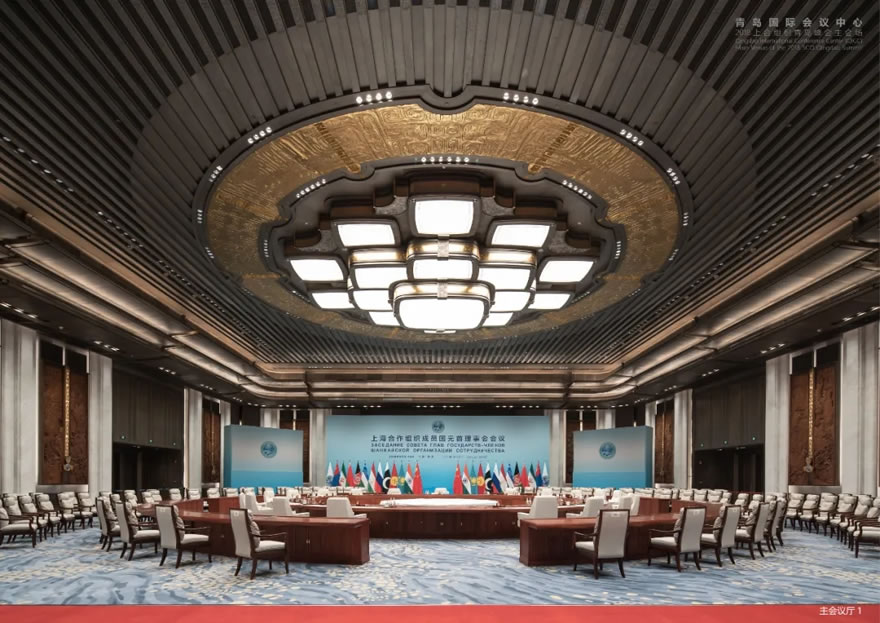
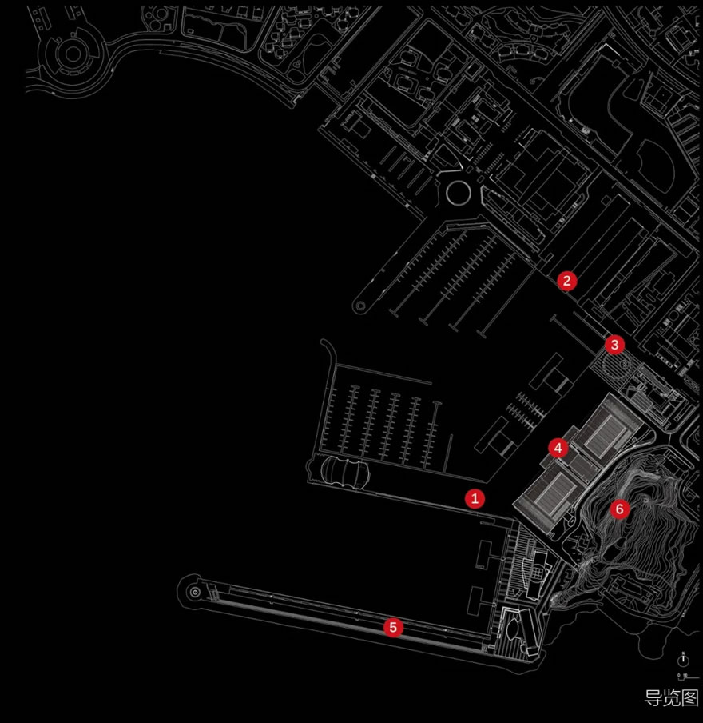

01 青岛国际会议中心（2018 上合组织青岛峰会主会场） 该案例把国家级会议功能、青岛山海港城格局、快速建造压力和后续城市公共使用，整合为一个兼具主场外交仪式性与海滨城市公共性的会议中心。Cultural用场地大关系生成外交建筑的整体形象 青岛国际会议中心海港夜景
02 基本信息 项目内容项目名称青岛国际会议中心（2018 上合组织青岛峰会主会场）英文名称Qingdao International Conference Center建筑师 / 事务所华南理工大学建筑设计研究院；何镜堂院士团队地点青岛奥帆广场 / 奥帆中心核心区国家 / 城市中国 / 山东青岛建成年份 / 使用时间2018 年上合组织青岛峰会投入使用建筑类型国际会议中心 / 主场外交会议建筑建筑面积约 5.4 万平方米建筑高度ARCHINA：23.99 米；中国建筑：22.6 米，屋面起翘最高点 28 米层数ARCHINA：地上 4 层、地下 1 层；中国建筑：地上 2 层结构体系地上主体约 1.1 万吨钢结构；更细结构体系未检索到可靠资料主要材料外墙金属板，“青岛金”暖色金属表皮；具体构造节点未检索到可靠资料承建 / 建设中国建筑集团有限公司承建信息可信度high主要依据来源华南理工大学、中国日报、ARCHINA、中国建筑、新华网、金羊网 / 羊城晚报
03 资料质量与证据密度 资料状态：sufficient是否有一级资料：是一级资料是否用于身份确认：是建筑专业媒体数量：1图片处理状态：completed已覆盖分析项：concept / context / program / circulation / facade_material / structure_construction / user_experience / urban_relationship资料最充分的方向：设计单位、概念叙事、场地关系、外观语言、主会场功能、快速建造。资料明显不足的方向：完整平面图、剖面图、幕墙节点、材料供应链、施工样板与质量验收细节。需要人工复核：楼层数、建筑高度、完整设计团队名单、正式业主信息。
04 一句话判断 这个案例最值得学习的不是单一造型，而是如何把国家级会议功能、青岛山海港城格局、快速建造压力和后续城市公共使用，压缩成一个可识别、可运营、可被公众记住的主场外交建筑。 青岛国际会议中心海港夜景
05 场地信息表 场地维度与设计回应相关的信息场地区位奥帆广场核心区域，原奥运帆船赛事场地周边自然环境依山面海，山、城、海、港、堤在视野中叠合人文环境承接 2008 奥帆城市记忆，又承担 2018 上合峰会主场外交功能道路与交通公开资料未检索到完整交通组织图建筑服务人群峰会代表团、会议会展人群、后续游客与市民场地核心矛盾高等级外交会议的庄重秩序，需要与海滨开放性、后续公共使用并存
06 诊断 来源明确：项目时间非常紧。中国日报和金羊网均提到何镜堂团队于 2017 年 9 月左右接到任务，至 2018 年 6 月投入使用；新华网与中国建筑报道工程建设约 6 个月。基于资料的归纳判断：设计面对的是四重约束：主场外交的礼仪尺度、青岛海滨场地的城市可见性、快速设计建造、峰会后的公共与会议复合使用。
07 定位 来源明确：华南理工大学与中国日报报道均确认项目定位为“中国气派、世界水准、山东风格、青岛特色”，并强调“山水一体、海天一色”。基于资料的归纳判断：这种定位把建筑从单纯会议设施提升为城市地标和外交形象界面，要求建筑既有清晰中心轴线和仪式性，又不能脱离奥帆中心的海港语境。
08 策略 策略：以“腾飞逐梦、扬帆领航”为总概念，将海鸥展翅、帆影出海、柱廊秩序和中轴门廊组织为统一形象。回应的问题：如何在海滨环境中生成具有青岛地域特征、又能承载国际峰会礼仪的公共建筑。对空间 / 形式 / 建造的影响：建筑采用水平展开的三段式格局，屋面与柱廊共同形成横向舒展的海港界面；主入口和柱廊强化中心礼仪序列。
09 功能梳理 项目是多层国际会议综合体。ARCHINA 将其描述为为中国主场外交峰会提供会场，并在峰会后承办会议和大型活动，兼具旅游景点、会展会议与“市民客厅”目标。功能组织的关键不是单一会堂，而是会议厅、接待、流线、景观界面和后续运营的复合。 主会议厅
10 布局逻辑 ARCHINA 明确提到项目呼应场地格局、强化“山海轴线”，并采用水平三段布局。基于外观照片和场地描述可判断，建筑以横向展开面对港湾，通过屋面、柱廊和水面倒影形成较强的海滨公共界面。公开资料未检索到完整平面图，因此内部流线与功能分区不能进一步推断。
11 形式构成 项目的形式语言把“海鸥展翅”“帆影出海”转译为大屋面、起翘边缘、柱廊和中心门廊。这个操作的重点不是仿生图像本身，而是用可识别的水平屋盖控制整体天际线，再用柱列和金属表皮形成庄重、连续的公共立面。 建筑场景序列参考
12 场所与氛围 建筑选择暖色调金属表皮，媒体报道中称为何镜堂团队反复推敲的“青岛金”。这种材料表达避免纯白海滨建筑的轻盈化倾向，转向庄重、温暖、具有仪式感的国家会议中心气质；同时水面倒影、港湾和帆船背景又削弱了封闭纪念性，使其能进入市民旅游体验。 立面与表皮参考
13 建造语言 骨架：新华网与中国建筑均报道项目地上主体为约 1.1 万吨钢结构。更细的柱网、节点、屋盖结构体系未检索到可靠资料。围合：中国建筑报道工程包括幕墙、装饰、园林景观、市政道排、智能化、音视频会议等专业工程；具体幕墙节点未公开。地台：建筑位于奥帆广场核心区域，与海港水面和景观平台形成连续公共界面；地台构造做法未检索到可靠资料。
14 材料与工艺 公开采访资料强调“青岛金”金属板的现场比选：既要庄重典雅，又要避免过度反光或俗艳。这里的材料控制是形象控制的一部分：颜色、反射度和海滨光照共同决定建筑在白天、夜景和水面倒影中的公共形象。
15 物理性能与施工控制 可靠资料可以确认的是快速建造组织：从任务启动到峰会使用周期短，承建报道称工程建设约 6 个月。具体防水、防腐、抗风、幕墙节点、施工样板和验收细则未检索到可靠资料，不能根据海滨环境做进一步推测。
16 方法 1：用场地大关系生成外交建筑的整体形象 面对的问题：国家级会议建筑容易脱离地方语境，变成抽象纪念性对象。具体做法：把奥帆中心的海港、水面、帆船和山海轴线转化为横向展开的体量、起翘屋面和帆影柱廊。建筑效果：形成一眼可识别的青岛海滨会议中心形象。相关图片：可迁移方法：大型公共建筑可以先锁定城市级视线、轴线和地景关系，再决定体量姿态。
17 方法 2：把宏大叙事压缩到可建造的构件语言 面对的问题：“中国气派、世界水准、山东风格、青岛特色”容易停留在口号层面。具体做法：通过中轴门廊、柱廊、屋面边缘和金属表皮，把抽象定位转化为可施工、可控制的建筑语言。建筑效果：建筑既有仪式性，也保持了现代会议中心的清晰体量。相关图片：可迁移方法：面对多重价值要求时，优先把关键词落到少量高控制度构件上。
18 方法 3：为一次性峰会预设长期运营身份 面对的问题：重大活动建筑容易在活动后失去公共性和使用弹性。具体做法：设计目标中同时包含国事活动、旅游景点、会展会议、市民客厅；建筑面向港湾展开，保持可被公众识别和到达的城市界面。建筑效果：峰会后仍可作为城市名片和公共目的地继续运营。相关图片：可迁移方法：事件型公共建筑应在设计初期并置“活动期间秩序”和“活动后日常使用”。
19 方法 4：在快速建造中保留材料现场校准 面对的问题：工期紧张时，外立面材料容易被标准化采购和快速施工主导。具体做法：采访资料提到团队对“青岛金”金属板进行现场多角度比选，控制颜色与反射效果。建筑效果：材料色彩服务于庄重、温暖、海滨光照下不过度反光的整体形象。相关图片：可迁移方法：快速项目仍应保留少数关键材料的现场样板和光照校验。 室内与表皮氛围参考
20 对我的设计启发 可迁移方法 1：先抓城市级关系，再处理建筑形象。这里的“山海轴线”和奥帆港湾比单体造型更先决定建筑的姿态。可迁移方法 2：将抽象文化要求落到少数可控构件：屋面、门廊、柱廊、表皮颜色。可迁移方法 3：重大事件建筑要同步设计活动后身份，避免只为仪式瞬间服务。不适合直接照抄的部分：海鸥、帆影、金色金属板属于高度场地化和事件化表达，换场地直接复制会失去依据。可转化成的分析图：山海轴线图、水平三段体量图、外交礼仪流线图、事件使用 / 日常使用转换图、金属表皮光照校准图。
21 信息缺口与冲突 楼层冲突：ARCHINA 写地上 4 层、地下 1 层；中国建筑写地上两层。高度冲突：ARCHINA 写建筑高度 23.99 米；中国建筑写建筑高度 22.6 米、屋面起翘最高点 28 米。设计团队：华南理工大学和中国日报确认何镜堂院士团队；完整专业负责人名单未检索到可靠来源。图纸缺口：未检索到公开可用的完整平面图、剖面图、节点图。构造缺口：钢结构总量、幕墙和装饰专业范围可确认；节点、构件尺度、安装工艺、质量控制程序未公开。
22 Reference Sources 上合峰会主会场惊艳登场，“华工设计”再引媒体关注华南理工大学上合组织青岛峰会在中国建筑承建的青岛国际会议中心召开中国建筑青岛国际会议中心（2018上合组织青岛峰会主会场） | 华南理工大学建筑设计研究院ARCHINA上合峰会主会场建设创造“青岛速度”中国日报网华工团队设计上合组织青岛峰会主会场，何镜堂院士为您揭开会场背后的故事金羊网 / 羊城晚报